Fotos tiradas do jogo em 15/11. Para ver em movimento (o carregamento local dura menos de um segundo): abra http://localhost:5173/?carregamento=20, que segura a tela por 20 segundos.
A sua pintura assada em 384×216. Entre um clarão e outro: a neblina em duas faixas andando, a luz quente da doca presa na névoa, as luzes pulsando e a chuva fina.
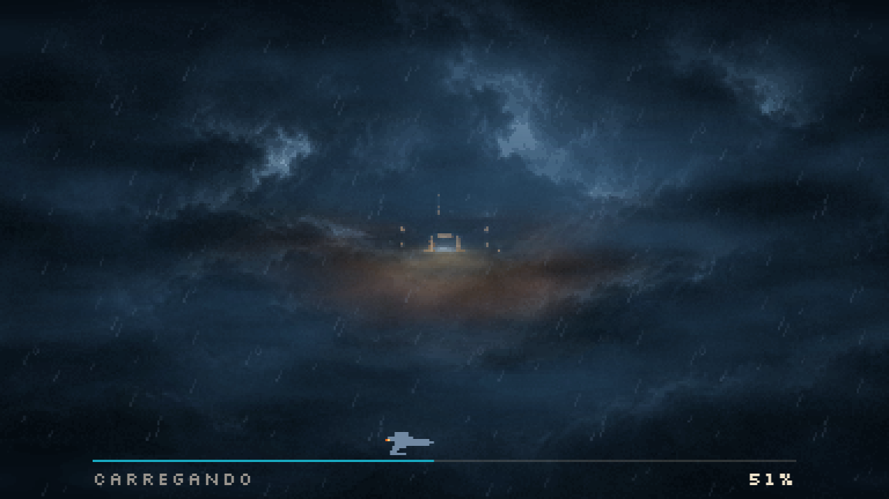
Seis pontos do céu, cada um no seu relógio. Não há raio desenhado: a massa de nuvens acende por dentro, mais forte onde ela é fina, e as partes grossas ficam em silhueta.
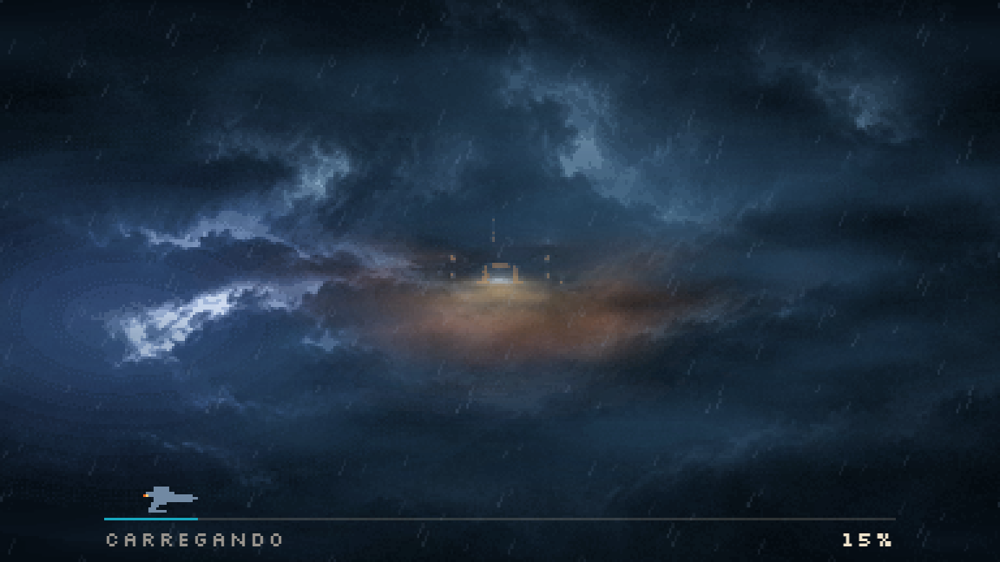
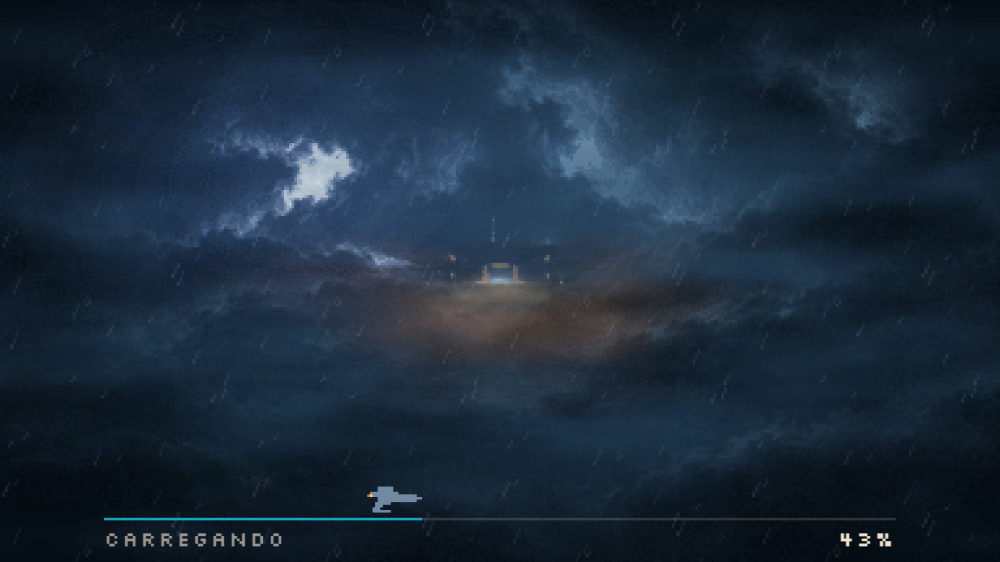
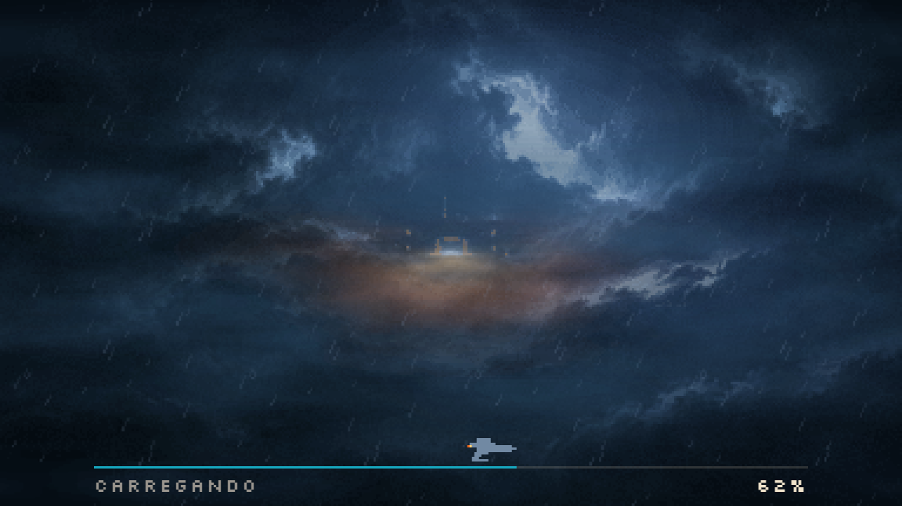
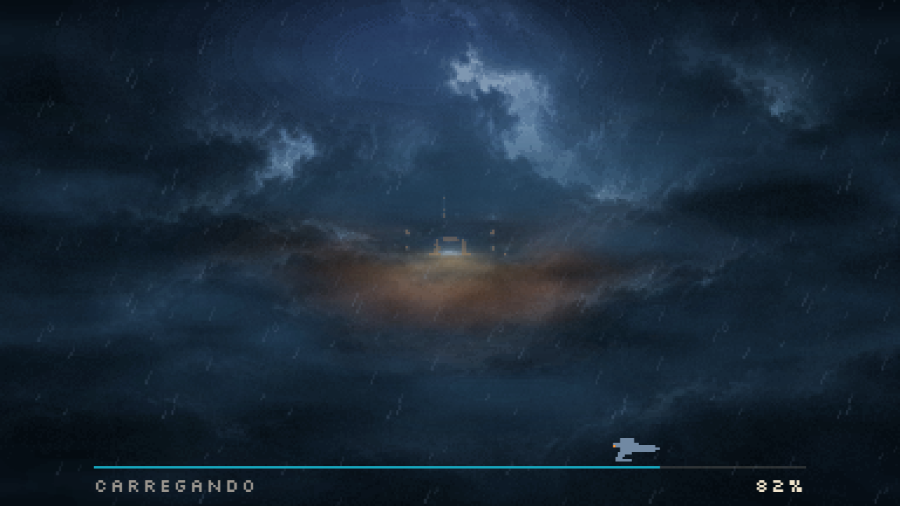
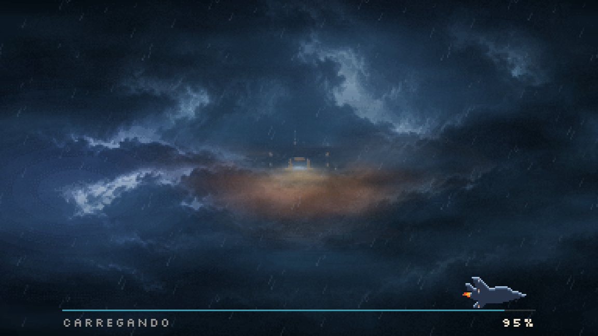
A barra completa, a nave acelera e sai pela direita, a cena escurece e o menu entra.
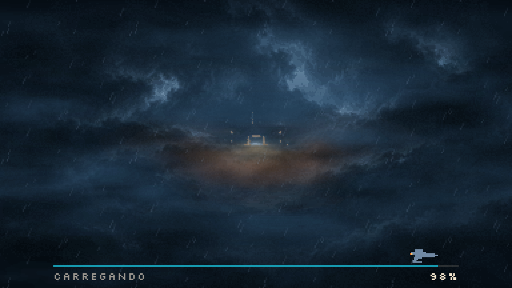
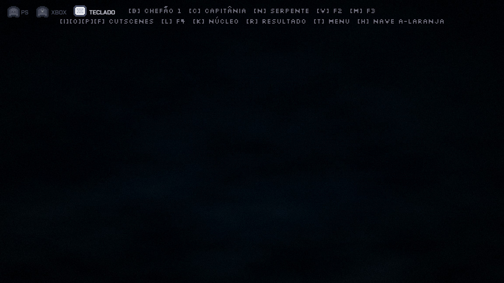
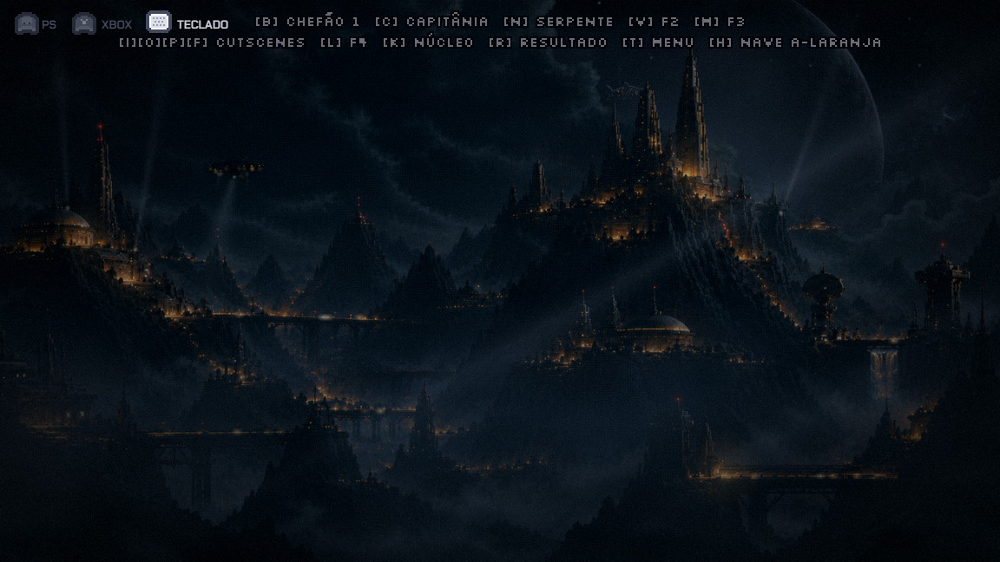
A tempestade só brilha devagar, sem piscar (o quadro mais claro da filmagem).
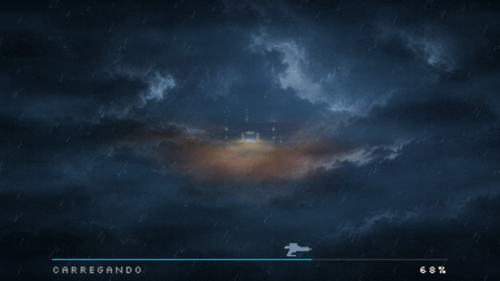
A nave padrão sobre o escuro do jogo, em SVG de grade de pixel (com um PNG de reserva). Abaixo, em 16, 32 e 96 px.
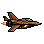
67.1 KB em 13 arquivos, todos na resolução do jogo. A filmagem mediu a claridade média da tela entre 37.68 (quieta) e 45.66 (o clarão mais forte), de 0 a 255.
| brasa.png | 5.0 KB |
| chuva.png | 0.5 KB |
| clarao-1.png | 5.0 KB |
| clarao-2.png | 4.1 KB |
| clarao-3.png | 5.8 KB |
| clarao-4.png | 5.4 KB |
| clarao-5.png | 5.7 KB |
| clarao-6.png | 3.5 KB |
| fundo.png | 19.4 KB |
| luzes.png | 0.3 KB |
| nave.svg | 0.7 KB |
| neblina-a.png | 5.7 KB |
| neblina-b.png | 5.9 KB |